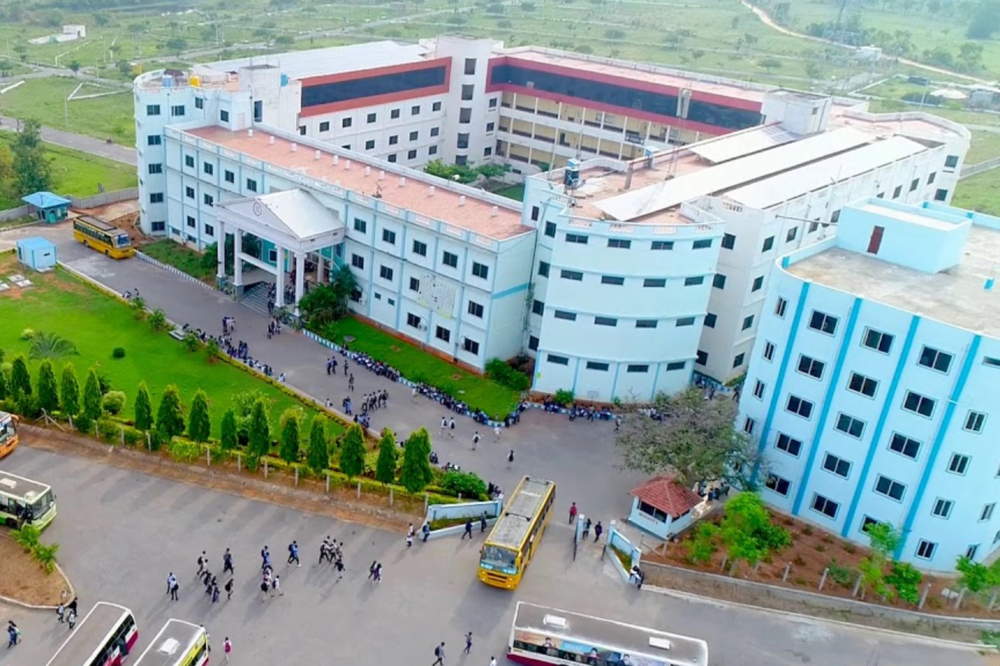

MITM is situated at a beautiful, enchanting and sprawling landscape about 3 kms behind K.R.Mills. The institute is founded by a group of eminent people recognised for their eminence in the field of science and engineering technology. Many of them have served at the highest levels of AICTE and University. The college is equipped with all modern learning aids to make teaching-learning process a pleasure. The highly qualified staff is its asset. The college has to its credit the highest number of admissions in the academic year 2007-08 among the 16 newly opened engineering colleges in Karnataka.
